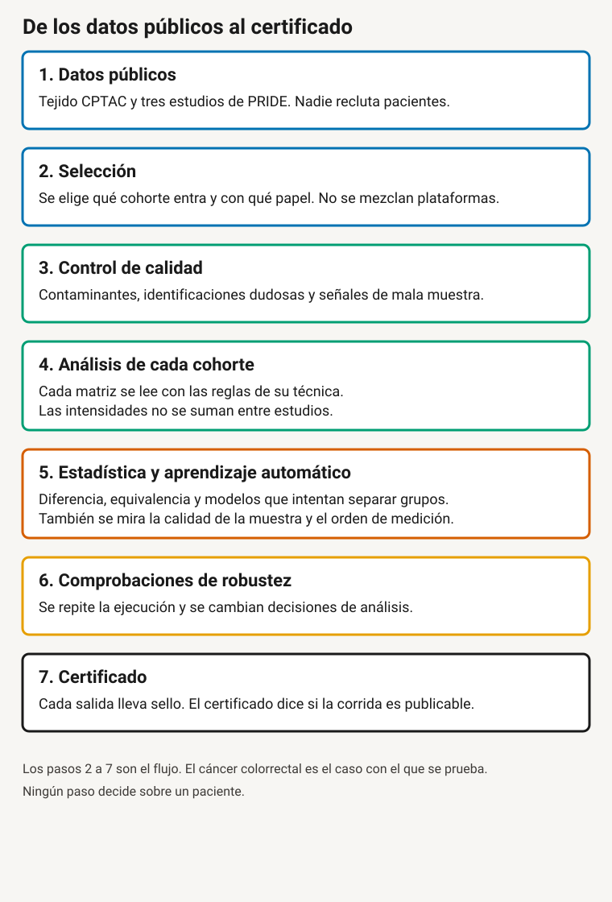
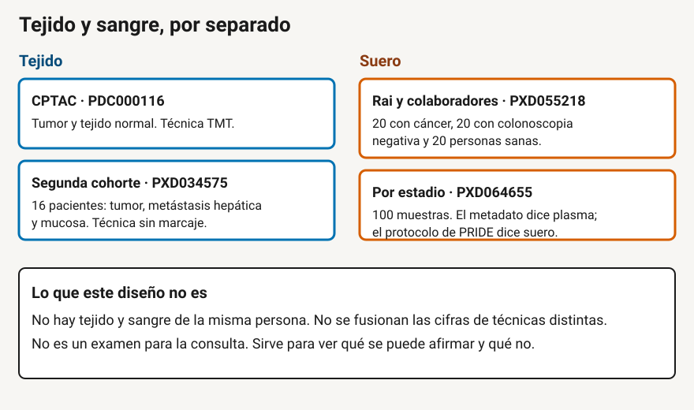

Un procedimiento, no un panel
El objetivo específico 1 es diseñar ese procedimiento para tejido y suero, con selección, control de calidad, análisis de cada cohorte por su lado y trazabilidad. El objetivo 2 es aplicarlo al cáncer colorrectal. El objetivo 3 es ver si las conclusiones aguantan.


Qué hace cada tramo
- Selección. Entran cuatro matrices públicas. Cada una tiene un papel: ancla del cambio en tejido, segunda cohorte de tejido, suero con colonoscopia negativa, y suero por estadio.
- Control de calidad. Se apartan contaminantes conocidos, identificaciones poco fiables y señales de hemólisis, plaquetas, coagulación o piel. En el tejido se intentan controles físicos; no todos se pueden medir en la segunda cohorte.
- Inferencia. Una proteína del suero se llama diferente, equivalente o sin clasificar. El margen de equivalencia es de 1,5 veces y el umbral de la FDRTasa de descubrimientos falsos. Al mirar cientos de proteínas a la vez, limita cuántas de las «diferencias» pueden ser casualidad. Aquí el alfa es 0,05. es 0,05. Hacen falta al menos ocho observaciones por grupo.
- Modelos. Seis modelos intentan separar cáncer y colonoscopia negativa por dentro del mismo estudio, con validaciónAquí significa comprobar el modelo con porciones de las mismas muestras que no usó para entrenar. No es un estudio en otro hospital ni un examen aprobado. cruzada y una prueba de permutación. Uno usa solo la calidad de la muestra. Otro usa las proteínas después de descontar esa calidad.
- Sello. Cada archivo de salida guarda el commit, la fecha, la semilla y las versiones de los programas. El certificado de la corrida sellada quedó en estado publicable, con 119 sellos.
El detalle de arquitectura, para quien quiera leer el código, está en el repositorio: docs/diseno.md de la etiqueta v4.0.0. La semilla de la corrida es 20260914.